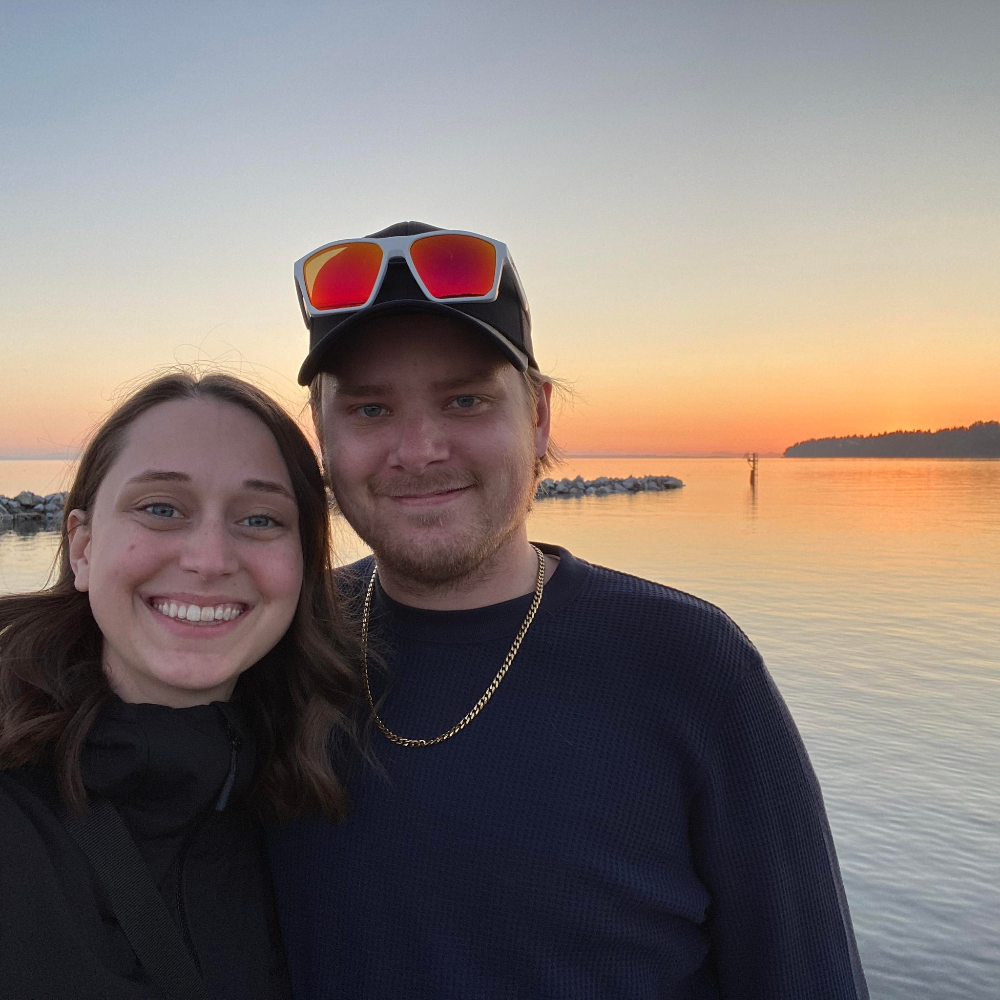

Sam Peterson | WDD 130
Hello everyone my name is Sam Peterson and I live in Edmonton Alberta, Canada. I love playing hockey and I play goalie for my mens league team. I have always loved designing things such as logos and websites and I look forward to learning more in this class! I have been designing websites using wordpress since about 2017. I have dabbled in HTML and CSS and hope to improve my skills through this course. Some other interesting things about me is that I have an identical twin brother. We do pretty much everything together. I also have an older brother and sister as well as a younger sister, so there is five of us kids in total. Hopefully this gives you a good idea of who I am and some of my interests. I would love to get to know each of you more in the future as we learn more in this course!